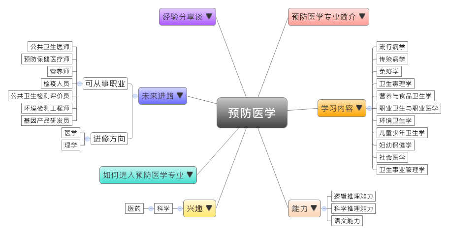
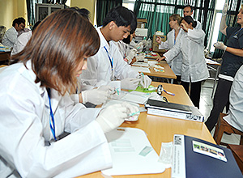

- 专业大观园
-

- 专业介绍
-
什么是预防医学？
预防医学在医学科学体系中主要是研究预防和消灭病害，目的在于提升卫生环境、增强人类体质，以及营造有利于健康生活的环境。此外，预防医学的工作对象包括健康和无症状患者的个人和群体，思考与研究具有高健康效益的积极预防对策。在职场上，随着中国的社经发展和文化素养不断提高，人们对疾病的认识也转向主动预防、追求健康为先。国家对预防医学教育益发重视，所以社会对公共卫生专业人才的需求也日益增加。在生活中，各种流行病的认识与预防、外在环境与内在心理的卫生需求、社会医学议题（如慢性病、老年病、精神病等），以及随着社会高度发展引起的生态破坏问题等都是预防医学的一环。人们常说“要注意健康、卫生。”，而在生活中就得从关注“公共卫生”的预防医学做起。
预防医学专业除了培养学生具备扎实的基础医学和预防医学的理论和知识，也需要对于临床医学稍作了解，才能具备从事防疫工作、卫生监督，以及研拟能增进人们健康方略的能力。
 参与传染病病理培训研讨会 
预防医学实践教学－疫苗施打
- 学习内容
-
预防医学专业学生除学习基本的基础医学与临床医学的理论与知识，也要接受流行疾病分析与防疫、卫生检测技术的专业训练，才能具备从事卫生防疫、改善环境卫生、控制传染病与职业病、监测食品卫生等预防医学工作。
本专业学习方向通常分为三类：流行病学、生物统计、预防医学；主要是以基础医学和临床医学为主，并加上预防医学的主要专业课程。预防医学专业主干课程有：组织胚胎学、生物化学、生理学、病理学、人体寄生虫学、医学微生物学、免疫学、药理学、卫生化学、毒理学、诊断学、卫生统计学、流行病学、传染病学、职业卫生与职业医学、环境卫生学、营养与食品卫生学、儿童少年卫生学、妇幼保健学、卫生经济学、卫生法规与监督学、卫生事业管理、医学伦理学……等。
本专业可以习得的知识与获得之能力、技能列点：第一，能分析影响人身心理健康与造成疾病流行的因素的能力；第二，能依据国内环境制订有效改善健康与预防疾病之措施；第三，熟稔国家卫生相关政策，并随时更新全球公共卫生领域的最新动态。
- 能力
-
预防医学专业学生，需具备以下能力：
相关性向能力 说明 科学推理能力  了解流行病、传染疾病的规律与发展态势
了解流行病、传染疾病的规律与发展态势
具备分析疾病、卫生防疫，以及化学、食品、环境的检测能力逻辑推理能力 通过环境卫生的分析，了解与规划有益健康的生活环境
了解病原、外在环境、宿主的改变，对于个人卫生健康的影响语文能力 具备宣传与推广正确的卫生观念的能力
具备优秀外语能力，以吸收国外最新的预防医学新知
- 兴趣
-
若你对下列活动或事物有高度兴趣，可考虑进入预防医学专业学习：
科学 医药 热爱制订能影响他人或团队的决策
擅长通过理性的方法说服和影响他人
运用科学方法找归纳/分析事物的原理原则有兴趣
- 如何进入此专业
-
下面列举开设预防医学专业的211工程重点大学院校：
- 未来进路
-
可从事职业
预防医学专业的就业领域很广。在医学领域可从事传染病与流行病等临床、科研工作，大部分毕业生会选择此条途径，进入社区医院、医院的预防保健科、感染管理科或医院管理科中担任后勤工作。毕业生也可以进入非医学领域，如疾病预防控制中心、中国卫生监督、出入境检验检疫局、食品药品监督管理局，从事卫生防疫与监督、妇幼保健与卫生宣传、环境保护与监测、海关疫检，以及卫生事业管理与社会医学研究等工作。在工作职场上皆能发挥卫生保健思维推广、检测防疫等专长：
行业 职业 专业公共卫生服务 公共卫生医师、预防保健医疗师、营养师、健康管理内科医师 国家机构
（出入境检验检疫局、食品药品监督管理局、海关）检疫人员、健康管理与促进服务人員 科学研究和技术服务业 公共卫生检测评价员、环境检测工程师、基因产品研发员、采样员 教育 校医、幼儿园保健医师、保健医生 进修方向以下列举预防医学专业毕业生可以继续修读之学科门类、一级学科与硕士点：
学科门类 一级学科 硕士点 医学 公共卫生与预防医学营养与食品卫生学、流行病与卫生统计学、劳动卫生与环境卫生学、儿少卫生与妇幼保健学、公共卫生与预防医学、公共卫生信息学、老年保健与姑息医学、传染病预防控制、卫生应急、卫生政策与管理、职业卫生与职业医学 公共卫生（专业硕士）公共卫生 社会医学与卫生事业管理社会医学与卫生事业管理 理学 公共卫生与预防医学卫生检验学、卫生检验学、临床药学、军事预防医学、卫生毒理学
- 经验分享谈
-
抗击非典(SARS)英雄——钟南山
非典为俗称“非典型肺炎”的简称，也是2003年爆发的SARS疫情，当年，是钟南山医师在第一线组织广东省SARS防治研究，建置了“合理使用皮质激素，合理使用无创通气，合理治疗并发症”的方法治疗感染SARS的重症患者，存活率达96.2%，由于他的卓越贡献，让“钟南山”这个名字成为抗击非雄与医改先锋的代名词。
钟南山出身医生世家，父亲是中国上世纪著名的儿科专家，母亲是高级护理专业出身，儿子钟惟德则是广州第一人民医院的泌尿外科主任医师，可谓一门三杰。钟南山小时候受到家庭背景的耳濡目染下，喜欢起父亲做研究的小白鼠，也对医学产生兴趣，最终在1955年以优异成绩考进北京医学院。他毕业留在北医大，从事放射医学教学，然而文革与误诊却让他经历一段人生里崎岖不平的路。
好在他坚持下来，并在43岁时报名公费出国留学，抵达伦敦。这让他从此踏入呼吸道疾病领域的大门，然而在初期，英国指导教授却只给他8个月的时间停留，因为中国医师在那时资历是不被承认的。在某一次判断病人为代谢性碱中毒，应改以酸性利尿剂治疗的独到见解，使英国同行对他刮目相看，放下成见与之合作。
钟南山在呼吸疾病的防治研究上建树卓越，是中国支气管哮喘、COPD、重大呼吸道传染性疾病(例如SARS或新型流感)防治的领军人物，从而获得诸多奖项殊荣。 【资料来源：家庭医生在线. ”羊城名医“钟南山——出生杏林，一门三杰[EB/OL].】